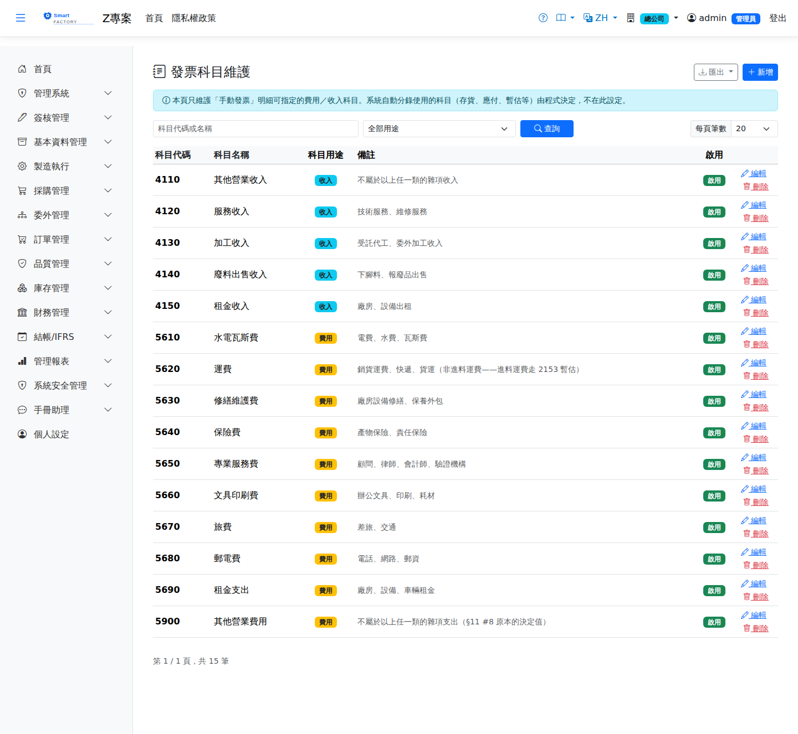

會計科目Chart of Accounts
會計科目主檔存放The chart of accounts holds 全公司共用的科目定義the account definitions shared across the whole company——科目不分廠別，各廠的傳票都記到同一組科目上。財務報表依科目性質決定一筆分錄落在哪一段、正負號是哪一邊。. Accounts are not per plant: every plant posts to the same set. The financial statements use the account type to decide which section an entry lands in and which side counts as positive.

欄位說明Field reference
| 欄位名稱Field | 必填Required | 說明Guide |
|---|---|---|
| 科目代碼Account code | 必填Required | 唯一識別碼，最長 20 個字元（例：6201）。The unique code, up to 20 characters (for example 6201). 建立後不可修改It cannot be changed once created，重複輸入會被擋下。, and a duplicate is refused. |
| 科目名稱Account name | 必填Required | 最長 100 個字元。這個名稱會Up to 100 characters. The name is 一併寫入傳票written onto the journal entry，讓總帳看得懂這筆分錄是什麼。 as well, so that the ledger reads sensibly. |
| 科目性質Account type | 必填Required | 決定借貸方向與落在哪一張報表的哪一段。數值對齊科目代碼首碼：1 資產、2 負債、3 權益（資產負債表）、4 營業收入、5 銷貨成本、6 營業費用、7 營業外收入、8 營業外費用（損益表）。資產與成本費用類借方為正，負債、權益與收入類貸方為正。Determines the debit/credit direction and which report section the account lands in. The values line up with the leading digit of the code: 1 asset, 2 liability, 3 equity (balance sheet) and 4 revenue, 5 cost of goods sold, 6 operating expense, 7 other income, 8 other expense (profit and loss). Assets and cost/expense accounts are debit-normal; liabilities, equity and revenue are credit-normal. |
| 系統科目System account | 唯讀標記。標示者為程式自動過帳所用的科目，代碼與性質不可修改、不可刪除。A read-only marker. Flagged accounts are used by automatic postings; their code and type cannot be changed and they cannot be deleted. | |
| 可手動選用Selectable manually | 勾選後才會出現在手動應付／應收發票的科目下拉。存貨、進貨暫估應付這類由自動分錄維護餘額的科目請勿勾選——手動打一筆進去，帳面仍然借貸平衡，但會與庫存子帳對不起來，而且要等稽核跑過才看得到。Only accounts with this ticked appear in the account picker on manual AP and AR invoices. Leave it off for accounts whose balance is maintained by automatic postings, such as inventory or the GR/IR accrual: a hand-entered line still balances, but it will not reconcile with the subledger, and nothing shows it until the audit runs. | |
| 科目名稱（英文）Account name (English) | 留白時英文介面顯示中文名稱。Falls back to the Chinese name when left blank. | |
| 備註Remarks | 最長 500 個字元，供內部說明使用時機。Up to 500 characters, for an internal note about when to use it. | |
| 啟用Active | 取消勾選後，新發票不再選得到這個科目，既有發票不受影響。Unticked, the account can no longer be chosen on new invoices; existing ones are unaffected. |
操作步驟Steps
新增科目Adding an account
查詢Searching
與手動發票的關係How it relates to manual invoices
手動開立應付／應收發票時，每一行明細When a manual AP or AR invoice is entered, every line 必須指定科目must have an account，可選的來源是本主檔中, and the choices come from the accounts in this master that are 勾選「可手動選用」且性質相符ticked as manually selectable and of a matching type的科目——應付發票只列費用類（5／6／8），應收發票只列收入類（4／7）。這也是: an AP invoice offers only cost and expense accounts (5, 6, 8), an AR invoice only revenue accounts (4, 7). It is also the 唯一來源only source——沒有指定科目的明細會被直接擋下，系統不會自動從產品類別或其他地方推算。: a line without an account is refused outright, and the system does not work one out from the product category or anywhere else.
刪除科目Deleting an account
系統科目一律不可刪除。已經被發票或傳票引用過的科目也A system account can never be deleted. An account already referenced by an invoice or a journal entry likewise 不可刪除cannot be deleted，系統會擋下並提示已被引用。理由是刪掉之後，那些明細上的科目代碼就再也查不回名稱，傳票會失去可讀的科目說明。; the system blocks it and says so. The reason is that once it is gone, the account code on those lines can no longer be resolved to a name, and the journal entries lose their readable account description.
匯出Export
查詢結果可匯出 Excel（.xlsx）、CSV 或 JSON，並套用目前的查詢條件。The results can be exported as Excel (.xlsx), CSV or JSON, with the current search criteria applied.